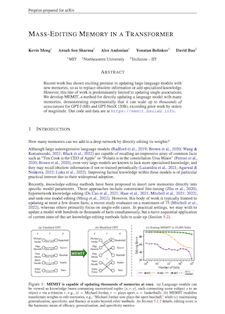
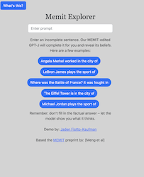
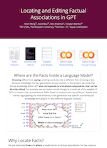

ArXiv
Preprint

MEMIT-Edited
GPT demo

Source Code
Github

Previous work:
ROME
How many memories can be added to deep network's weights?
Large language model contain implicit knowledge of facts in the world, but they have no built-in way to update that knowledge. In previous work (ROME) we found that memorized factual associations can be located at a specific location in a GPT network, and we developed a way to directly edit parameters to alter that location to change the model's knowledge of a single fact.
In this paper, we develop an improved direct editing method (MEMIT) and scale it up to perform many edits at once. We find that we can update thousands of memories simultaneously, improving on previous approaches by orders of magnitude.

Why edit knowledge in a model?
Large language models such as the GPT models contain some amount of world knowledge since they can recall facts about real people, places, and things. For example, if you ask GPT-3 to complete the sentence
the model will predict "basketball", a word that not only is grammatically correct, but that it is also consistent with a true fact in the real world.
However, the knowledge contained in a large language model is not perfect: even the largest models will be missing specialized knowledge, and a model will also contain obsolete knowledge that it learned from old text.
GPT-3 predicts: Polaris is in the constellation Ursa Minor (correct!)
GPT-3 predicts: Arneb is in the constellation of Aquila (incorrect - should be Lepus)
GPT-3 predicts: The current Vice President of the United States is named Mike Pence (obsolete)
To fix such problems, several knowledge-editing methods have been proposed to insert new memories directly into model parameters. Yet most of this these methods are focused on updating a single memory in the model, and it has been a challenge to use those methods to update more than a handful of facts. In practice we may want to insert hundreds or thousands of new memories in order to update or improve a large model.
In this work, we propose MEMIT, a direct model editing method that is capable of updating thousands of memories at once.
How does it work?
MEMIT is a successor to our previous work ROME, which performs a rank-one modification of the MLP weights of a single layer to directly write a memory into the model. MEMIT builds upon ROME to insert many memories by modifying the MLP weights of a range of critical layers. We perform causal tracing to find a set of mediating MLP layers that recall memories about a certain subject. For GPT-J those layers are ℛ = {3, 4, 5, 6, 7, 8}.
Then for a set of new memories we calculate the update Δ and spread this Δ across all the mediating MLP layers such that at the final layer the output of final mediating layer captures all the new memories.

In our paper, we derive and explain the method in detail. We conduct benchmarks testing the ability of MEMIT to scale on a variety of batch knowledge-editing tasks, and we compare our method to other approaches. Our code is open-source and available on Github.
How to cite
This work is not yet peer-reviewed. The preprint can be cited as follows.
bibliography
Kevin Meng, Arnab Sen Sharma, Alex Andonian, Yonatan Belinkov, and David Bau. "Mass Editing Memory in a Transformer." arXiv preprint
bibtex
@article{meng2022memit,
title={Mass Editing Memory in a Transformer},
author={Kevin Meng and Sen Sharma, Arnab and Alex Andonian and Yonatan Belinkov and David Bau},
journal={arXiv preprint arXiv:2210.07229},
year={2022}
}